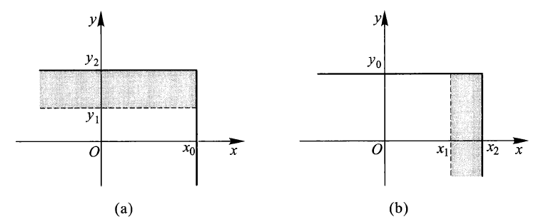
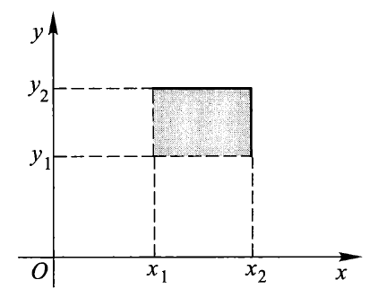

第 3 章 多维随机变量及其分布⚓︎
约 3617 个字 预计阅读时间 18 分钟
核心知识
- 二维离散型随机变量：联合分布律、边际分布律、条件分布律
-
二维连续型随机变量：联合分布 / 密度函数、边际分布 / 密度函数、条件分布 / 密度函数
- 相关题型解题思路的总结
-
二维随机变量的独立性
- 二维随机变量函数的分布
- \(Z = X + Y\)
- 关于正态变量的结论
- \(M = \max\{X, Y\}, N = \min\{X, Y\}\)
- \(Z = X + Y\)
二维离散型随机变量⚓︎
二维离散型随机变量：二维随机变量 \((X, Y)\) 的取值有限或可列。
联合分布⚓︎
设二维离散型随机变量 \((X, Y)\) 的可能取值为 \((x_i, y_j), i, j = 1, 2, \dots\)，称
为 \((X, Y)\) 的联合概率分布律，简称联合分布律 (joint distribution law)。它的列表法形式为：
满足的条件有：
- \(p_{ij} \ge 0, i, j = 1, 2, \dots\)
- \(\sum\limits_i \sum\limits_j p_{ij} = 1\)
边际分布⚓︎
其中 \(p_{i .} \ge 0, p_{. j} \ge 0, \sum\limits_{i}p_{i .} = 1, \sum\limits_{j}p_{. j} = 1\)
它们分别称为随机变量 \(X\) 与 \(Y\) 的边际分布律 (marginal distribution law) 或边缘分布律，可以用以下表格表示：
条件分布⚓︎
当 \(P(Y = y_j) \ne 0\) 时，
当 \(P(X = x_i) \ne 0\) 时，
其中显然有 \(\dfrac{p_{ij}}{p_{. j}} \ge 0, \dfrac{p_{ij}}{p_{i .}} \ge 0\)，且 \(\sum\limits_{i = 1}^{+ \infty}\dfrac{p_{ij}}{p_{. j}} = \sum\limits_{j = 1}^{+ \infty}\dfrac{p_{ij}}{p_{i .}} = 1\)
称为给定条件 \(\{Y = y_i\}\) 条件下 \(X\)/\(\{X = x_i\}\) 条件下 \(Y\) 的条件分布律 (conditional distribution law)。
二维随机变量的分布函数⚓︎
联合分布函数⚓︎
设二维随机变量 \((X, Y)\)，\(\forall\ x, y\)，称函数
为 \((X, Y)\) 的联合分布函数。
性质：
-
给定 \(x = x_0\)，\(F(x_0, y)\) 关于 \(y\) 单调不减；给定 \(y = y_0\)，\(F(x, y_0)\) 关于 \(x\) 单调不减
 -
\(0 \le F(x, y) \le 1\)，且 \(F(x, -\infty) = F(-\infty, y) = F(-\infty, -\infty) = 0\)，\(F(+\infty, +\infty) = 1\)
- \(F(x, y) = F(x + 0, y), F(x, y) = F(x, y + 0)\)，即 \(F(x, y)\) 关于 \(x\) 右连续，关于 \(y\) 右连续
-
令 \(x_2 > x_1, y_2 > y_1\) 时，有
\[ \begin{align} & F(x_2, y_2) - F(x_1, y_2) - F(x_2, y_1) + F(x_1, y_1) \notag \\ = & P(x_1 < X \le x_2, y_1 < Y \le y_2) \ge 0 \notag \end{align} \]
边际分布函数⚓︎
记二维随机变量 \((X, Y)\) 的联合分布函数 \(F(x, y)\)，\(X, Y\) 的边际分布函数分别为 \(F_X(x), F_Y(y)\)，则：
条件分布函数⚓︎
设 \((X, Y)\) 为
-
二维离散型随机变量：当 \(P(X = x_i) \ne 0\) 时，称函数
\[ F_{Y|X}(y | x_i) = P(Y \le y | X = x_i) \]为给定 \(\{X = x_i\}\) 条件下 \(Y\) 的条件分布函数
-
二维连续型随机变量：\(\forall x\)，若 \(P(x < X \le x + \delta) > 0, \delta > 0\)，\(\forall y\)，称函数
\[ F_{Y|X}(y | x) = \lim\limits_{\delta \rightarrow 0^+}P(Y \le y | x < X \le x + \delta) \]为给定 \(\{X = x\}\) 条件下 \(Y\) 的条件分布函数
总结：一般地，对于给定实数 \(x\)，若极限
对任何实数 \(y\) 均存在，则称函数
为给定 \(\{X = x\}\) 条件下 \(Y\) 的条件分布函数，仍记为 \(P(X \le x | Y = y)\)
二维连续型随机变量⚓︎
联合分布⚓︎
设二维随机变量 \((X, Y)\) 的联合分布函数为 \(F(x, y)\)，若存在二元非负函数 \(f(x, y)\)，使对任意的实数 \(x, y\)，有
则称 \((X, Y)\) 为二维连续型随机变量，称 \(f(x, y)\) 为联合密度函数。
性质：
- \(f(x, y) \ge 0\)
- \(\int_{-\infty}^{+\infty} \int_{-\infty}^{+\infty} f(x, y) \text{d}x\text{d}y = F(+\infty, +\infty) = 1\)
-
在 \(f(x, y)\) 的连续点处有
\[ \dfrac{\partial^2F(x, y)}{\partial x \partial y} = f(x, y) \] -
\((X, Y)\) 落入 \(xOy\) 平面任一区域 \(D\) 的概率为
\[ P((X, Y) \in D) = \iint\limits_D f(x, y) \text{d}x\text{d}y \]- 当 \(\Delta x \rightarrow 0^+, \Delta y \rightarrow 0^+\) 时，可得
\[ P(x < X \le x + \Delta x, y < Y \le y + \Delta y) \approx f(x, y)\Delta x \Delta y \]即 \((X, Y)\) 落在矩形区域 \(D\) 的概率近似等于 \(f(x, y)\Delta x \Delta y\)，这也表明 \(f(x, y)\) 是描述二维随机变量 \((X, Y)\) 落在点 \((x, y)\) 附近的概率大小的一个量。
边际分布⚓︎
\(X\) 和 \(Y\) 的边际密度函数分别用 \(f_X(x), f_Y(y)\) 表示。
因为：
所以：
做题心得
如果算出关于随机变量 \(X\) 的边际密度函数是一个常数，而且 \(X\) 的取值范围受另一个随机变量 \(Y\) 的制约（可能出现在 \(y\) 的取值范围中我算错了好几次 qwq
条件分布⚓︎
- 给定 \(\{X = x\}(f_X(x) \ne 0)\) 的条件下 \(Y\) 的条件密度函数为：
- 给定 \(\{Y = y\}(f_Y(y) \ne 0)\) 的条件下 \(X\) 的条件密度函数为：
可以看出：条件密度函数 = 联合密度函数 / 边际密度函数
对应的条件分布函数为：
 性质（以 \(f_{X|Y}(x|y)\) 为例
性质（以 \(f_{X|Y}(x|y)\) 为例
- \(f_{X|Y}(x|y) \ge 0\)
- \(\int_{-\infty}^{+\infty}f_{X|Y}(x|y) \text{d}x\) = 1
- \(P(a < X < b | Y = y) = \int_a^bf_{X|Y}(x|y) \text{d}x\)
- 在 \(f_{X|Y}(x|y)\) 的连续点 \(x\)，有 \(\dfrac{\text{d}F_{X|Y}(x|y)}{\text{d}x} = f_{X|Y}(x|y)\)
- 乘法公式：\(f(x, y) = f_{X|Y}(x|y) \cdot f_Y(y) = f_{Y|X}(y|x)\cdot f_X(x)\)
二元均值分布和二元正态分布⚓︎
二元均值分布⚓︎
设二维随机变量 \((X, Y)\) 在二维有界区域 \(D\) 上取值，且具有联合密度函数：
则称 \((X, Y)\) 服从 \(D\) 上均匀分布。
若 \(D_1\) 是 \(D\) 的一个子集，则可得到 \(P((X, Y) \in D_1) = \iint\limits_{D_1}f(x, y)\text{d}x\text{d}y\)，即 \(P((X, Y) \in D_1) = \dfrac{\text{Area of}\ D_1}{\text{Area of}\ D}\)
二元正态分布⚓︎
注
作业题和历年卷上都没有出现过直接考察密度函数的问题，因此个人认为只需要二元正态分布的表示，以及边际密度函数的结果就行了。
设二维随机变量 \((X, Y)\) 具有联合密度函数：
其中 \(-\infty < \mu_1 < +\infty, -\infty < \mu_2 < +\infty, \sigma_1 > 0, \sigma_2 > 0, |\rho| < 1\)，则称 \((X, Y)\) 服从参数为 \((\mu_1, \mu_2; \sigma_1, \sigma_2; \rho)\) 的二元正态分布，记为 \((X, Y) \sim N(\mu_1, \mu_2; \sigma_1^2, \sigma_2^2; \rho)\)
其中 \(\rho\) 是相关系数（第 4 章会讲到的）
-
边际密度函数（不依赖于参数 \(\rho\)，二维正态分布 -> 一维正态分布
） ：- \(f_X(x) = \int_{-\infty}^{+\infty}f(x, y)\text{d}y = \dfrac{1}{\sqrt{2\pi}\sigma_1}e^{\frac{(x - \mu_1)^2}{2\sigma_1^2}}\)，即 \(X \sim N(\mu_1, \sigma_1^2)\)
- \(f_Y(y) = \int_{-\infty}^{+\infty}f(x, y)\text{d}x = \dfrac{1}{\sqrt{2\pi}\sigma_2}e^{\frac{(y - \mu_2)^2}{2\sigma_2^2}}\)，即 \(Y \sim N(\mu_2, \sigma_2^2)\)
-
条件密度函数（
这个应该不会考吧） ：- 在 \(\{X = x\}\) 的条件下，\(Y\) 的条件分布为 \(N(\mu_2 + \rho \dfrac{\sigma_2}{\sigma_1}(x - \mu_1), (1 - \rho^2)\sigma_2^2)\)，即：
\[ \begin{align} f_{Y|X}(y|x) & = \dfrac{f(x, y)}{f_X(x)} \notag \\ & = \dfrac{1}{\sqrt{2\pi}\sigma_2\sqrt{1 - \rho^2}}\exp\{\dfrac{-1}{2(1 - \rho^2)\sigma_2^2}[y - (\mu_2 + \rho\dfrac{\sigma_2}{\sigma_1}(x - \mu_1))]^2\} \notag \end{align} \]- 在 \(\{Y = y\}\) 的条件下，\(X\) 的条件分布为 \(N(\mu_1 + \rho \dfrac{\sigma_1}{\sigma_2}(y - \mu_2), (1 - \rho^2)\sigma_1^2)\)
二维连续型随机变量分布的解题思路（摘自 Savia 的笔记，略有补充）
- 求事件概率：确认该事件对应的区域，与我们画好的非零区域取交集，得到要积分的区域，在该区域内积分即可
- 比如：已知 \(f(x, y)\)，求 \(P(X > Y)\)
- 若随机变量服从正态分布，则可以利用“正态分布的线性组合仍然服从正态分布”这一性质，将事件看作正态变量的线性组合，然后转化到标准正态分布，利用标准正态分布的分布函数计算概率
- 求分布函数的值：将分布函数转化为对应的事件，按上述方法处理
- 求边际密度函数：
- 代入边际密度函数的定义式进行积分
- 若 f(x, y) 只在有限区域 D 内不为 0，则只在不为 0 的 x 或 y 上积分即可
- 最终的结果要求 \(x, y \in (-\infty, +\infty)\)，因此要写成分段函数的形式（加上 "0，其他 "）
- 求条件密度函数：
- 求出边际密度后，代入条件密度函数的定义式即可
- 此时也要注意 \(x, y \in (-\infty, +\infty)\)，写成分段函数的形式
- 求条件概率：将条件（“|”之后的那个）代入条件密度函数，在指定范围内对“|”前的变量作积分即可
- 独立性判断：检查是否 \(f_X(x) f_Y(y) = f(x, y)\) 或 \(F_X(x) F_Y(y) = F(x, y)\)
- 求协方差：由 \(f(x, y)\) 计算 \(E(XY)\)，由 \(f_X(x), f_Y(y)\) 计算 \(E(X), E(Y)\)，然后代入公式计算
- 相关性判断：若协方差大于 0 则正相关，小于 0 则负相关，等于 0 则不相关
随机变量的独立性⚓︎
独立的两种定义：
-
对任意两个实数集合 \(D_1, D_2\)，若：
\[ P(X \in D_1, Y \in D_2) = P(X \in D_1) \cdot P(Y \in D_2) \]则称随机变量 \(X, Y\) 相互独立
-
当 \(P(X \in D_1) \cdot P(Y \in D_2) \ne 0\) 时，定义亦可写成：
\[ P(X \in D_1 | Y \in D_2) = P(X \in D_1)\ \text{or}\ P(Y \in D_2 | X \in D_1) = P(Y \in D_2) \]即条件概率 -> 无条件概率
-
-
当且仅当对任意实数 \(x, y\)，有
\[ P(X \le x, Y \le y) = P(X \le x) \cdot P(Y \le y) \]成立，即 \(F(x, y) = F_X(x) \cdot F_Y(y)\) 时，\(X, Y\)（联合分布函数 = 边际分布函数的乘积）相互独立
- 二维离散型随机变量：设 \(X, Y\) 的可能取值为 \(x_i, y_j, i, j = 1, 2, \dots\)，对任意实数 \(x_i, y_j\)，都有
\[ p_{ij} = p_{i \cdot} \cdot p_{\cdot j}, i, j = 1, 2, \dots \]-
二维连续型随机变量：对任意实数 \(x, y\)，有
\[ \begin{align} \int_{-\infty}^x [\int_{-\infty}^y f(u, v)\text{d}v]\text{d}u & = \int_{-\infty}^x f_X(u)\text{d}u \int_{-\infty}^y f_Y(v)\text{d}v \notag \\ & = \int_{-\infty}^x [\int_{-\infty}^y f_X(u) \cdot f_Y(v)\text{d}v]\text{d}u \notag \end{align} \]
定理：二维连续型随机变量 \(X, Y\) 相互独立的充要条件是 \(X, Y\) 的联合密度函数 \(f(x, y)\) 几乎处处可写成 \(x\) 的函数 \(m(x)\) 与 \(y\) 的函数 \(n(y)\) 的乘积，即：
- 所以，当 联合密度函数 = 边际密度函数的乘积 时也能说明二维随机变量的相互独立
证明
补充：n 维随机变量的独立性
注：仅做了解即可，考试不太可能考这么复杂吧 ...
对于 n 维随机变量 \((X_1, X_2, \dots, X_n)\)，
- 联合分布函数：\(F(x_1, x_2, \dots, x_n) = P(X_1 \le x_1, X_2 \le x_2, \dots, X_n \le x_n)\)
- 边际分布函数：\(F_{X_1}(x_1) = P(X_1 \le x_1) = F(x_1, +\infty, +\infty, \dots, +\infty)\)
-
当 \(n > 2\) 时，\((X_1, X_2)\) 的联合分布边际函数为
\[ F_{X_1, X_2}(x_1, x_2) = P(X_1 \le x_1, X_2 \le x_2) = F(x_1, x_2, +\infty, \dots, +\infty) \]
-
n 维连续型随机变量：随机变量 \((X_1, X_2, \dots, X_n)\)，对于它的分布函数 \(F(x_1, x_2, \dots, x_n)\)，存在非负函数 \(f(x_1, x_2, \dots, x_n)\)，使得
成立。其中 \(f(x_1, x_2, \dots, x_n)\) 为联合密度函数。
- 边际密度函数：
若对于任意实数 \(x_1, x_2, \dots, x_n\)，有
则称 \(X_1, X_2, \dots, X_n\) 相互独立。
设 \((X_1, X_2, \dots, X_m)\) 与 \((Y_1, Y_2, \dots, Y_n)\) 分别为 \(m\) 维和 \(n\) 维的随机变量，分别用 \(F_X(x_1, x_2, \dots, x_m)\) 与 \(F_Y(y_1, y_2, \dots, y_n)\) 表示它们的联合分布函数，再记 \(F(x_1, x_2, \dots, x_m; y_1, y_2, \dots, y_n)\) 为 \((X_1, X_2, \dots, X_m, Y_1, Y_2, \dots, Y_n)\) 的联合分布函数。对任意实数 \(x_i, y_j, i = 1, 2, \dots, m, j = 1, 2, \dots, n\)，若
则称 \((X_1, X_2, \dots, X_m)\) 与 \((Y_1, Y_2, \dots, Y_n)\) 相互独立。
若 \((X_1, X_2, \dots, X_m)\) 与 \((Y_1, Y_2, \dots, Y_n)\) 相互独立，\(g_1, g_2\) 时两个连续函数，则 \(g_1(X_1, X_2, \dots, X_m)\) 与 \(g_2(Y_1, Y_2, \dots, Y_n)\) 相互独立。
多元随机变量函数的分布⚓︎
\(Z = X + Y\) 的分布⚓︎
-
\((X, Y)\) 为二维离散型随机变量，设 \(P(X = x_i, Y = y_j) = p_{ij}, i, j = 1, 2, \dots\)，又设 \(Z\) 的可能取值有 \(z_1, z_2, \dots, z_k, \dots\)，则有
\[ \begin{align} P(Z = z_k) & = P(X + Y = z_k) \notag \\ & = \sum\limits_{i = 1}^{+\infty}P(X = x_i, Y = z_k - x_i), k = 1, 2, \dots \notag \end{align} \]或
\[ \begin{align} P(Z = z_k) & = P(X + Y = z_k) \notag \\ & = \sum\limits_{j = 1}^{+\infty}P(X = z_k - y_j, Y = y_j), k = 1, 2, \dots \notag \end{align} \]- 特别地，当 \(X, Y\) 相互独立时，上式可以写成：
\[ P(Z = z_k) = \sum\limits_{i = 1}^{+\infty}P(X = x_i) \cdot P(Y = z_k - x_i), k = 1, 2, \dots \]或
\[ P(Z = z_k) = \sum\limits_{j = 1}^{+\infty}P(X = z_k - y_j) \cdot P(Y = y_j), k = 1, 2, \dots \] -
\((X, Y)\) 为二维连续型随机变量，设联合密度函数为 \(f(x, y)\)，则 \(Z\) 的分布函数为：
\[ \begin{align} F_Z(z) & = P(Z \le z) = \iint\limits_{x + y \le z}f(x, y)\text{d}x\text{d}y \notag \\ & = \int_{-\infty}^{+\infty}[\int_{-\infty}^{z-y} f(x, y)\text{d}x]\text{d}y \notag \\ & = \int_{-\infty}^{+\infty}[\int_{-\infty}^{z} f(u - y, y)\text{d}u]\text{d}y \notag \\ & = \int_{-\infty}^{z}[\int_{-\infty}^{\infty} f(u - y, y)\text{d}y]\text{d}u = \int_{-\infty}^z f_Z(u)\text{d}u\notag \end{align} \]- 故 \(Z\) 的密度函数为：\(f_Z(z) = \int_{-\infty}^{+\infty} f(z - y, y)\text{d}y\)
- 由对称性知：\(f_Z(z) = \int_{-\infty}^{+\infty} f(x, z - x)\text{d}x\)
- 卷积公式：当 \(X, Y\) 相互独立时，\(f_Z(z) = \int_{-\infty}^{+\infty} f_X(z - y) f_Y(y) \text{d}y = \int_{-\infty}^{+\infty} f_X(x) f_Y(z - x) \text{d}x\)
 结论
结论
-
\(n\) 个相互独立的服从泊松分布的随机变量的和仍服从泊松分布，即：若 \(X_1, X_2, \dots, X_n\) 相互独立，且 \(X_i \sim P(\lambda_i)\)，则 \(\sum\limits_{i = 1}^n X_i \sim P(\sum\limits_{i=1}^n \lambda_i)\)
-
\(n\) 个正态变量的线性组合仍为正态变量（不要求相互独立）
- 若 \(X_1, X_2, \dots, X_n\) 相互独立，且 \(X_i \sim N(\mu_i, \sigma_i^2)\)，则 \(a_0 + \sum\limits_{i = 1}^n a_i X_i \sim N(a_0 + \sum\limits_{i = 1}^n a_i \mu_i, \sum\limits_{i = 1}^n a_i^2 \sigma_i^2)\)
\(M = \max\{X, Y\}, N = \min\{X, Y\}\) 的分布⚓︎
记 \(X, Y\) 的联合分布函数为 \(F(x, y)\)，\(X, Y\) 的边际分布函数分别为 \(F_X(t), F_Y(t)\)
- \(M\) 的分布函数：\(F_M(t) = P(\max\{X, Y\} \le t) = P(X \le t, Y \le t) = F(t, t)\)
- 当 \(X, Y\) 相互独立时，\(F_M(t) = F_X(t) \cdot F_Y(t)\)
- \(N\) 的分布函数：\(F_N(t) = P(\min\{X, Y\} \le t) = P((X \le t) \cup (Y \le t)) = F_X(t) + F_Y(t) - F(t, t)\)，或者 \(F_N(t) = 1 - P(\min\{X, Y\} > t) = 1 - P(X > t, Y > t)\)
- 记忆：因为要求 \(X, Y\) 的最小值 \(\le t\)，那么只要确保 \(X, Y\) 中至少有一个 \(\le t\) 即可，因此取的是两个事件的并集
- 当 \(X, Y\) 相互独立时，\(F_M(t) = F_X(t) + F_Y(t) - F_X(t) \cdot F_Y(t) = 1 - [1 - F_X(t)] \cdot [1 - F_Y(t)]\)
推广到 \(n\) 个变量：设 \(X_1, X_2, \dots, X_n\) 为 \(n\) 个相互独立的随机变量，分布函数分别为 \(F_1(x), F_2(x), \dots, F_n(x)\)，记 \(M = \max\{X_1, X_2, \dots, X_n\}, N = \min\{X_1, X_2, \dots, X_n\}\)，则：
评论区